Tokyo, Japan
Technology leader & engineer. I automate things.
Product and engineering leader with 15+ years across developer tools, robotics, autonomous systems, logistics automation, and AI. I've built products from zero to 3,000+ B2B users, contributed to $100M+ industrial software product lines, and shipped tools that improved software delivery for high-volume Toyota vehicle programs. Before joining Telexistence, I spent almost a year hands-on with AI and agentic software development.
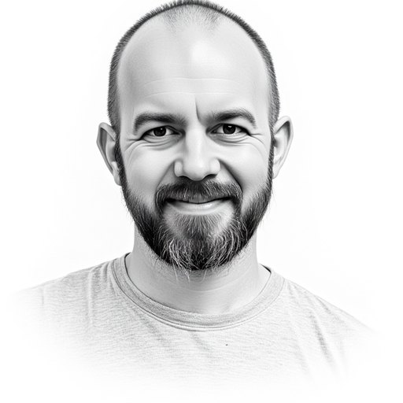
Currently EVP of Logistics Automation at Telexistence, turning prototype automation solutions into products and rolling them out across some of Japan's largest retail and 3PL warehouses.
Experience
EVP, Logistics Automation Telexistence2026 — now
- Leading and managing the logistics automation teams.
- Turning our prototype automation solutions into robust, deployable products.
- Rolling them out to some of the largest retail and 3PL warehouses in Japan.
Career Break AI & agentic software development2026
- Spent almost a year hands-on with GenAI tooling and agentic software development, learning how AI changes the way software gets built.
- Built and shipped personal projects as a solo developer, designer, and product manager. See Selected Projects.
- Plenty of time with my kids.
Sr. Technical Product Manager Woven by Toyota2021 — 26
- Product lead on Arene, Toyota's next-generation software platform & dev tooling, transforming Toyota's development processes and enabling faster innovation.
- 3D simulation for ADAS testing and validation, enabling safety systems testing in a digital twin environment.
- Reduced Toyota's software time-to-market by 10%
- Developer tools, software automation, big-data collection & visualization
- Owned a portfolio with 3,000+ B2B users across Toyota and 3rd-party supply chain; set roadmap and strategy across 5 engineering teams
- Co-inventor on software development visualization patent
Engineering Lead Rapyuta Robotics2020 — 21
Led three client-facing projects ($0.2–1.5M) in warehouse & construction automation — automated forklifts, from perception/ML to customizing our SaaS/PaaS cloud backend.
Engineering Manager / Technical Lead Ascent Robotics2017 — 20
Joined as the 2nd engineer; grew into a leadership role with the company through pre-Seed, Seed, Series A to lead the self-driving department of 30+ people, served as interim CTO, and owned architecture, hiring and roadmap. Earlier: senior robotics engineer designing the self-driving R&D platform.
Software / Robotics Engineer ZMP · Cognex · Hungarian Academy of Sciences2011 — 17
Self-driving platforms at ZMP; industrial vision SDKs and no-code developer tools at Cognex; 2D/3D computer vision, infra-red camera, and lidar point-cloud research at the Hungarian Academy of Sciences. Co-inventor on a multi-modal 3D scene reconstruction patent.
Selected Projects
Some of my recent personal projects I've been working on are showcased below. I am the sole developer, designer, and product manager for these projects. I have a few more in development! 🍔
My work projects include architecting a self-driving car platform from scratch, developing no-code developer tools for the manufacturing industry, deploying automated forklifts to construction sites, driving innovation at large enterprises, and more.
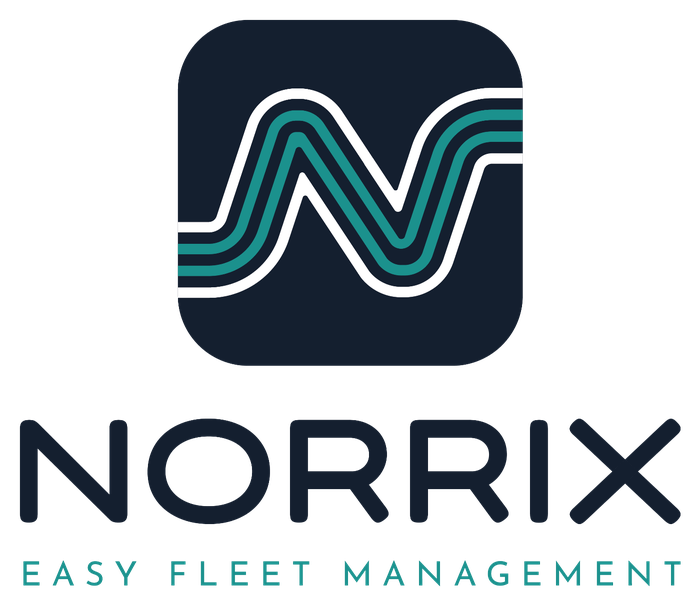
Norrix
Automating away the administrative burdens of Japanese logistics companies. Compliance tools, dispatcher dashboard and driver app (Android). A full stack SaaS offering with companion apps.
Degner
F1 live timing application and strategy tools for the armchair strategist. Degner is a visualization-heavy web application for real-time race data analysis, named after the famous Suzuka corners.
Balanze
See your AI subscriptions' usage limits in one place. A multi-platform tray application, CLI tool, and Claude Code extension to monitor spending and usage with alerts, customizations. Available on Windows, macOS, and Linux.
Education
- Georgia Institute of TechnologyMSc Computer Science — Computational Perception & Robotics2015 — 18
- UdacityProduct Manager Nanodegree2021
- UC BerkeleyDeep Reinforcement Learning Bootcamp2017
- Budapest University of Technology & EconomicsBEng Computer Engineering — Autonomous Control Systems & Robots2006 — 12
- Florida Institute of TechnologyBSc Computer Science (EU STARS scholarship)2009 — 10
Off the clock
Motorcycles, beer brewing, home automation, photography, and chilling with my kids. When I'm not working I'm usually traveling, exploring the city, or out on the bike.
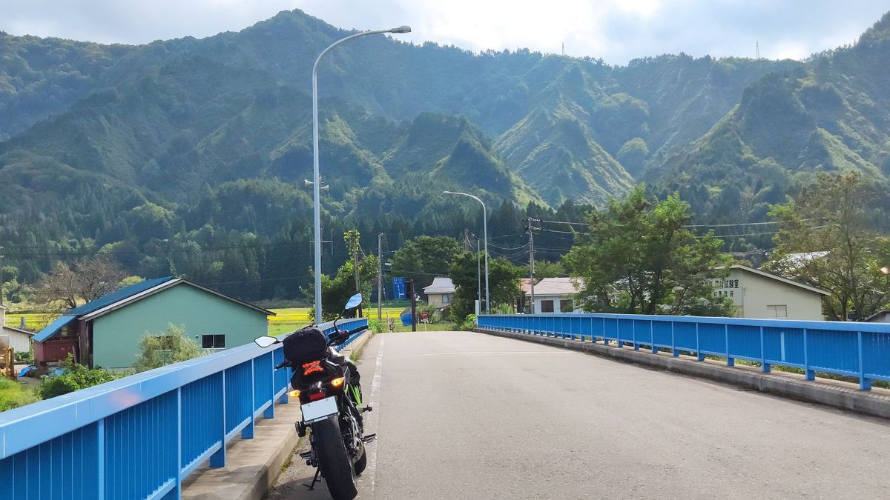
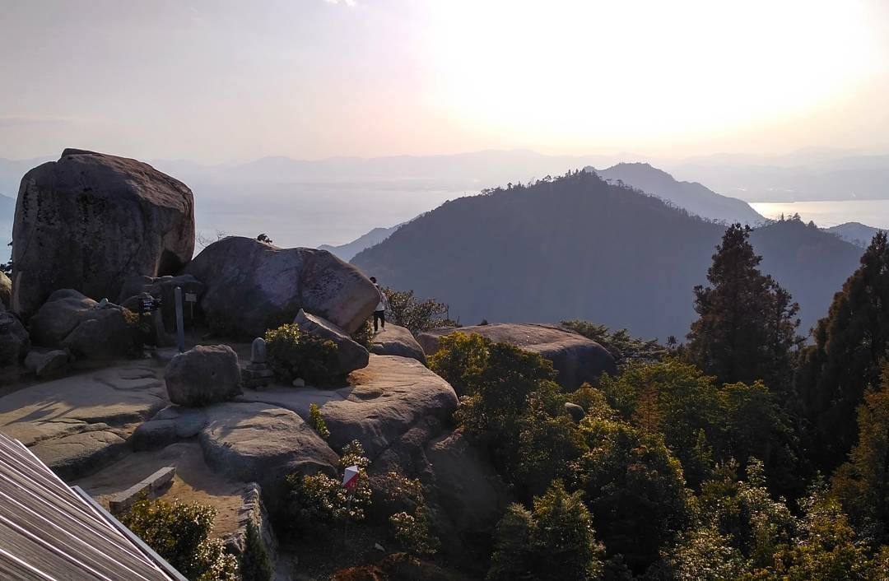
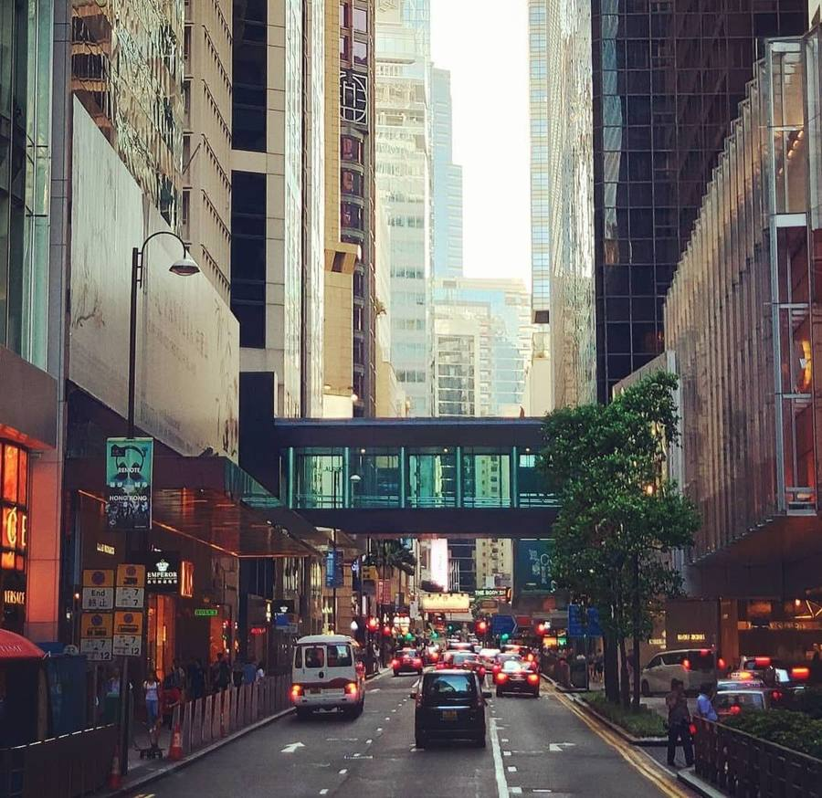
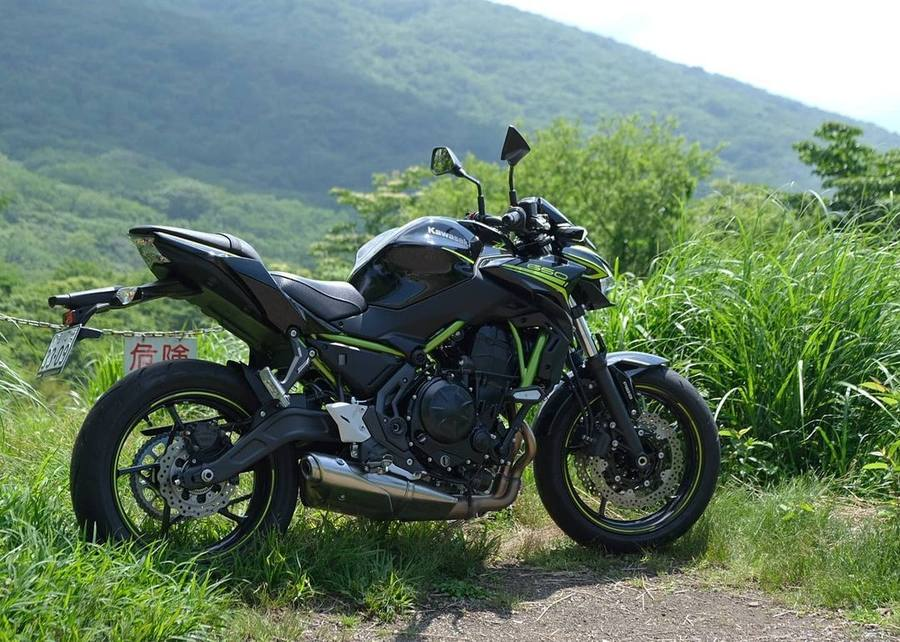
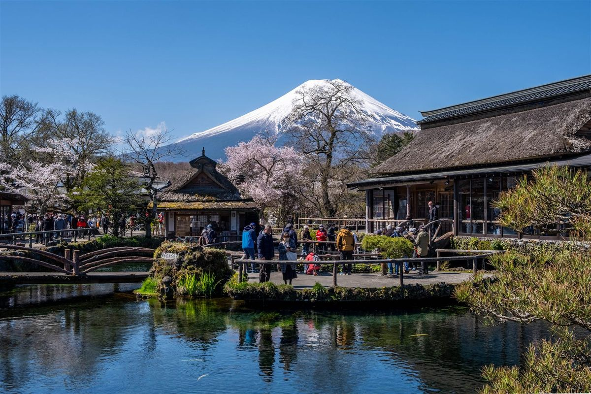
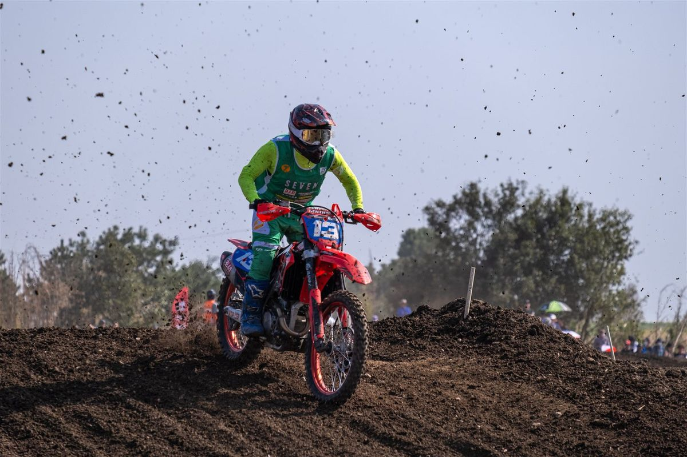
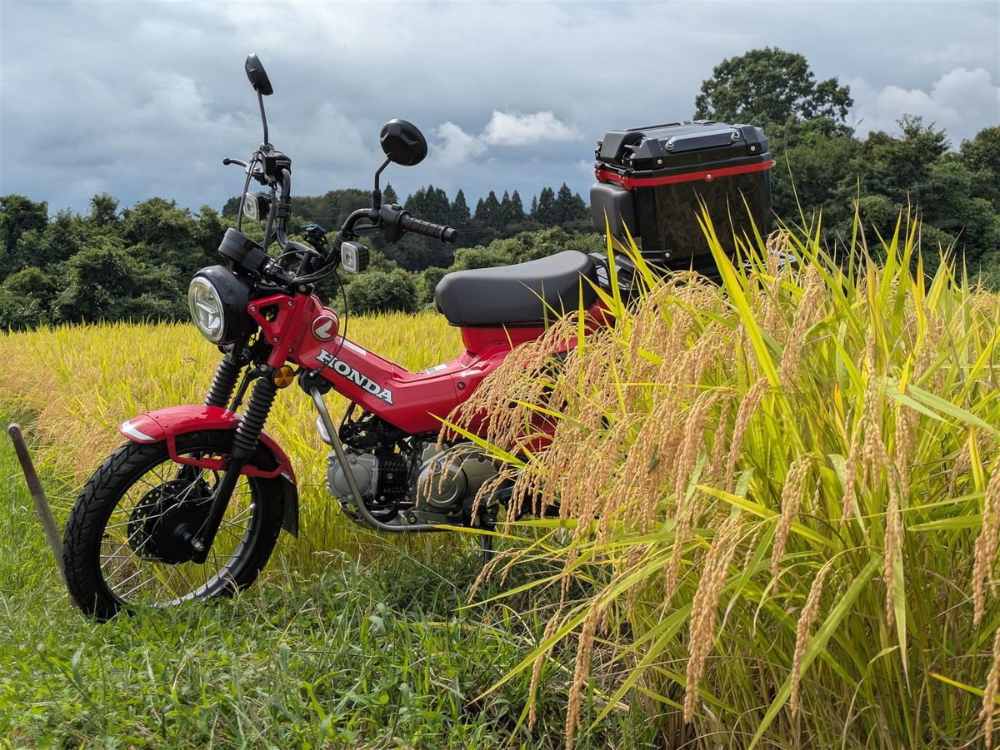
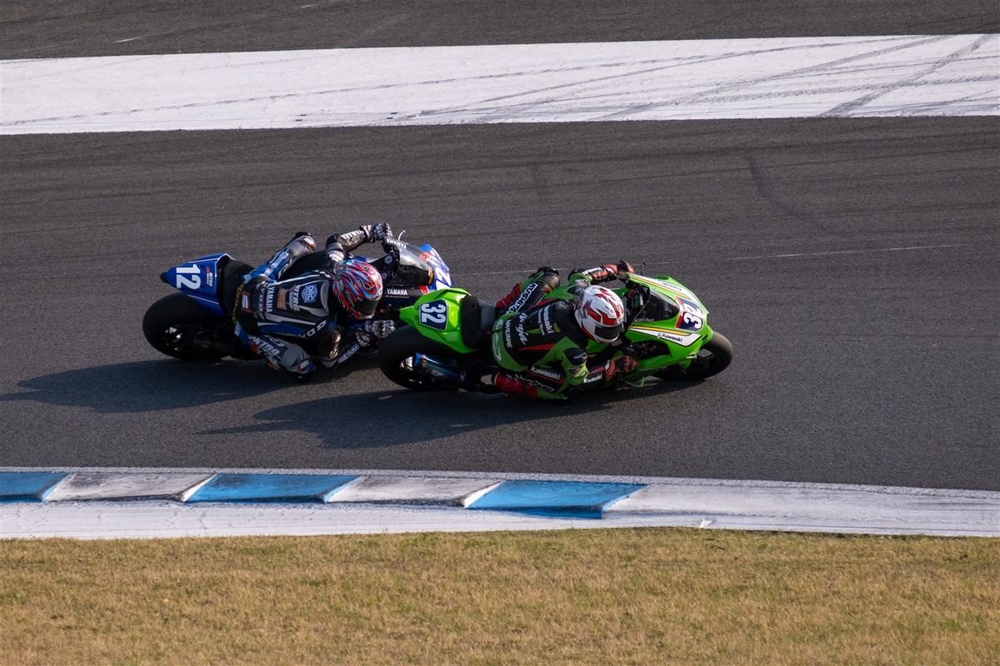
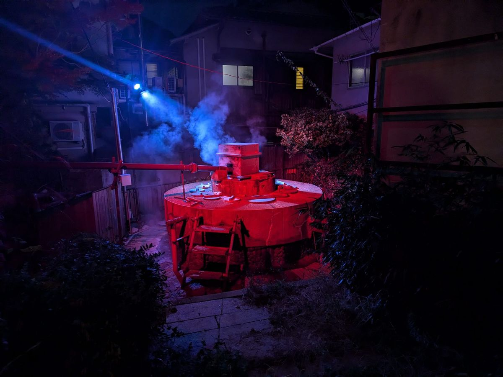
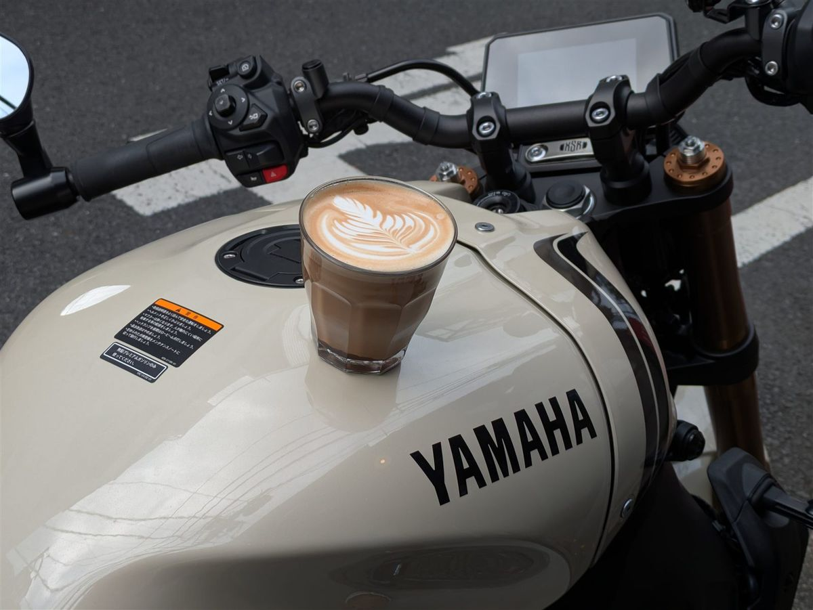